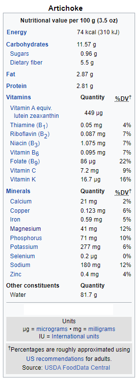

Wiki-Plant
Artichoke
Digestive Health and Detoxifying
Artichoke
 Additional InfoCommon name: Artichoke.
Scientific plant name: Cynara scolymus L.
Origin: The artichoke is a domesticated variety of the wild cardoon (Cynara cardunculus), which is native to the Mediterranean.
Harvest season: Artichoke harvest begins in late July or early August and continues until frost. First, they are cut with a special knife and thrown into a “canasta,” They are then emptied onto a belt and sorted. They are then put onto pallets and into coolers. After, they are hydro-vacuumed and rinsed with cold water. Lastly, they are forklifted into a truck to ship to local grocers or wholesalers.
Production: The three largest producers in the world are Italy, Egypt, and Spain, with quantities ranging from 200,000 to +300,000 tons per year. Peru, Argentina, and Algeria follow closely with productions above 100,000 tons.
Health benefits: Artichokes are the perfect aid for digestion. It helps with digestive complaints, e.g., stomach pain, nausea, vomiting, fullness, and flatulence. In addition, it provides liver protection, increases bile production, lowers blood sugar, helps regulate blood pressure, and has a positive detoxifying and diuretic effect, including cholesterol levels. Moreover, it relieves symptoms of IBS (Irritable Bowel Syndrome).
History of plant usage and discovery: The artichoke was believed to be a food among the ancient Greeks and Romans. However, some believe the cultivar was developed later, with Classical sources referring to the wild cardoon. Homer and Hesiod mentioned it as a garden plant in the eighth century BCE. During the Roman occupation of the Iberian Peninsula, its consumption spread to other areas in Egypt and northern Europe, like France and Germany. The ancient Greeks also cultivated the artichokes in Sicily, Carthage, and Cordoba.